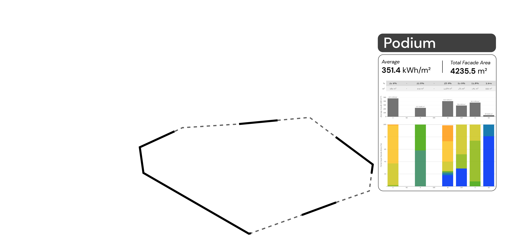
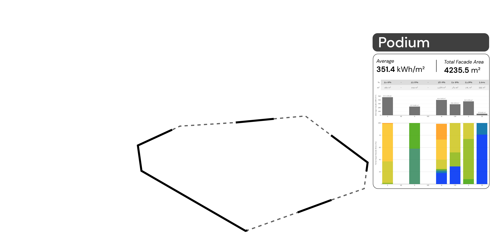

Building simulations
In architectural design, different computational tools are used to measure or study conceptual models. With the recent trend towards sustainability, building simulation tools are becoming more popular.
Some design intentions related to environmental simulations include:
How does my building perform in this climate?
Where are the critical areas which should be addressed?
How much better would my building perform if I added this overhang?
There are many questions to unpack, but they all begin by analysing the climatic data.
The most widely used weather data format is the Energyplus Weather (EPW) file format. It is a variant of the CSV file format and contains information on historical climate data. Consisting of 8760 rows (365 days X 24 hours), there are 35 columns representing radiation, wind speed and wind direction data.
How do simulations work?
Environmental simulations imitate natural phenomena like light and wind flow. The physics behind these phenomena are encapsulated in libraries like radiance and openFOAM.
3D models are used as inputs to interact with these libraries and this facilitates a study between geometry and environmental performance.
To ensure that simulations are relevant, the last input is the climate information. This comes from the EPW file and will inform the boundary conditions of the environmental simulations.
In short, simulations require:
1. Climate information
2. Physics library
3. 3D model
Here is a look at a solar radiation simulation, which simulates the amount of solar energy incident on a building surface.
Solar radiation results
The results are mapped onto the 3D model itself. This combined with the colour scale (0-700 kWh/m2) allows designers to identify areas which are receiving high amounts of solar radiation (red) and areas which are shaded across the year (blue).
The solar radiation results are a reflection of an annual scenario. Values achieved are a cumulative total across an entire year. The results take into account cloud cover, relative intensity of the sun at various positions and times of the year and the shading provided by surrounding buildings.
Qualitative & quantitative
These results are arguably a combination between qualitative and quantitative analysis. Qualitative in terms of the distribution across the building facade, its potential implications on space planning and the opportunities imaginable when viewing the results.
Viewed on its on, the solar radiation results are 1 dimensional (higher or lower). But when it is studied as a distribution, we can identify major performance trends. With the 3D model, an additional dimension can be achieved as the 3D data is combined to provide additional information (which facade requires more attention).
Designed to support designers
The charts are designed to facilitate comparison across design options. Using the average, designers can compare vastly different models. The facade by facade breakdown help with identifying areas for improvement and the distribution per facade makes obvious which facade requires more attention
One of the key considerations was to keep the charts relevant in a 2D static format. These charts were actually extracted and placed into environmental reports.
With interactive data visualisation, the charts can be used in a different way.
Hover over the pie charts


Relationship between model and data
Solar radiation is an annual cummulative result. The data is a relationship between 3D surface and data values. There is a direct relationship between the 3D points and the simulated results
The next simulation looks at another performance relationship.
Relationship between time, model and data
Sun hours simulation is across a single day, in this case, it was for the 21st of June.
Mapped onto the model are the sun hours received across the day. Compared to solar radiation, sun hours just measures the amount of direct sunlight incident on the building surface.
There is an opportunity to breakdown the study further by looking at the hourly data. This helps to identify which facades are receiving all day sun. Otherwise, it helps to identify when an area would be within shade. The analysis can also be combined with solar radiation studies as this provides a micro look at sun patterns. Addressing issues at the micro scale can potentially lead to improvements on the macro annual scale.
Hover over the charts


Data visualisation in architecture
A couple of simulation types are presented. They both deal with the sun and its impact on buildings.
Data in architecture is unique in its tendency to relate to geometry. Geometry is arguably the biggest consideration during a design process. This set of data was designed to support geometrical operations, it was also meant to identify key parameters which can be used to compare designs across projects.
Over time, the intention was to collect representative simulation data so that future projects have a reference point.